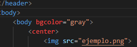

El uso de imagenes en paginas HTML es imporante.
La forma de hacerlo, es muy facil [asi como todo HTML].
En el "body" o footer" de una rama de codigo se coloca
la etiqueta "img src" describiendo el nombre del archivo
y su extension. Luego, se cierra la etiqueta.
